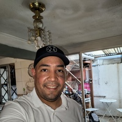

Curriculum vitáe

Roger Chirinos
Graduado en el Instituto Universitario de Tecnología y Administración Industrial (IUTA) como Técnico Superior en
Tecnología Petrolera en el año 2007, con 7 años de experiencia en el área de operaciones de producción y
mejoramiento de crudo, mezcla de materias prima para la elaboración de producto, en búsqueda de crecimiento
personal, laboral y profesional.

Datos Personales
- Nombre: Roger Daniel Chirinos Sanchez
- Lugar de Nacimiento: Falcon, Venezuela
- Fecha de Nacimiento: 26 de diciembre de 1987
Formación
- Unidad Educativa Instituto Judibana, básica
- Unidad Educativa Edgard Olaizola, media
- Instituto Universitario de Tecnología y Administración Industrial, Técnico Superior
Hobbies y Gustos
- Coleccionista
- Saint Seiya
- One Piece
- Dragon Ball
- My Hero Academia
- Grupos Musicales
- Twice
- Linkin Park
- Limp Biskit
- Ado
Redes Sociales
Portafolio
Desafio Final